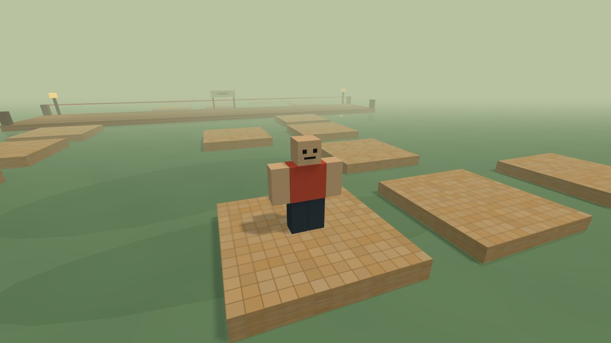

Cross a foggy lake on floating platforms, remember the real ones, and pull your friends out before something beneath finds them.
Co-op horror ↗
Original games built to be played. Cooperation, tension and a few unexpected ways to spend the next ten minutes.
SHT Games is the home for the full collection. Explore a game here, then head straight into its world.
Visit SHT Games

Cross a foggy lake on floating platforms, remember the real ones, and pull your friends out before something beneath finds them.

An office full of identical people. Some are players, some are NPCs. Steal what you can and avoid the guard.
A two-player rally through a Wadi Rum sandstorm. The driver follows the roadbook calls of a friend.

Repair the systems of a sealed station and find three keys while a creature follows the sound.

A crew-based browser game combining boat runs, upgrades and island building. Currently locked on SHT Games.
Try a different name or explore the whole collection.
Interactive experiences, a brand partnership, or an original game. Let’s explore what it could become.